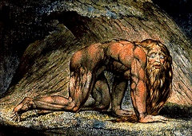

|

Image 15
Nebuchadnezzar
1795
William Blake
England, 1757-1827
Color print finished in pen and watercolor
16 15/16 x 23 3/4 inches
Miscellaneous purchase funds 12,581
Key Ideas
- The Old Testament story of King Nebuchadnezzar's
(NEB-uh-kad-NEZ-ar) dream and madness is an allegorical
interpretation of an historical event that teaches a
moral lesson.
- Reacting against the intellectualism of his times,
William Blake emphasized imagination and emotion in his
art.
- Blake's expressive
PRINT of King
Nebuchadnezzar illustrates his belief that the animal
aspects of human nature are the counterpart of reason.
Story
A harsh and powerful king named Nebuchadnezzar dreamed
one night of a great tree in the midst of the earth.
Abundant with leaves and fruit, the tree grew until its top
reached heaven. A celestial being appeared in
Nebuchadnezzar's dream and ordered him to cut down the tree,
leaving only its roots bound in iron and bronze among the
field grasses. The same being then decreed that the king's
mind be changed from a man's to a beast's.
Nebuchadnezzar did not understand his dream, so he called on
the prophet Daniel to interpret it. Daniel said that
Nebuchadnezzar was the strong tree in his dream. He said
that the dream was a decree from God that the mighty king
who ruled without care for anyone but himself would be
driven to dwell with beasts so that he would recognize God's
superior power. Nebuchadnezzar disregarded the dream's
warning and continued to misuse his power. When he failed to
show mercy to those he oppressed, the dream came true.
Driven from human society, Nebuchadnezzar found himself
eating grass as oxen do. He was drenched by the dew of
heaven, and his hair grew into eagles' feathers and his
nails turned into birds' talons.
Background
Nebchadnezzar
The story of Nebuchadnezzar's dream and madness is one
ofseveral moralizing, allegorical interpretations of
historical events in the Book of Daniel, written in the 2nd
century B.C. to illustrate the power of God.
Nebuchadnezzar II ruled over the Babylonian empire from 605
to 562 B.C. In 586 B.C. he destroyed Jerusalem, and in 573
B.C. he captured Tyre. Shortly thereafter he overran Egypt.
Although there is no historical proof, it is thought that
Nebuchadnezzar may have suffered from a mental illness
called Insania Zoanthropia, which causes humans to act like
animals.
William Blake
The visionary poet and artist William Blake despised the
emphasis on rational thought so popular in 18th-century
England. Sir Isaac Newton's mathematic and scientific
discoveries, which proved the existence of universal laws
and the value of scientific reasoning, heralded the Age of
Enlightenment in Europe. Advancements in areas such as
optics, chemistry, and biology encouraged intellectuals to
put their trust in nature, as understood by reason, rather
than in God. Many people believed that they could rationally
unlock nature's secrets to benefit their own lives.
Blake, on the other hand, believed that imagination, not
reason, was the dominant force of human nature. He rebelled
against the art establishment and created his own artistic
vocabulary, often illustrating apocalyptic scenes from the
Bible. His bestial images, including his 1795 version of
Nebuchadnezzar, illustrated the
uncontrollable, irrational side of human beings. He
apparently intended this image of the mad king to be paired
with an image of Newton that represented rational
thought.
Nebuchadnezzar
In this hand-colored print Blake depicts Nebuchadnezzar as
part animal and part man. The once-mighty Nebuchadnezzar
crawls on his hands and knees, and his feet sport bird's
talons as described in the Book of Daniel. His golden hair,
which was said to grow like an eagle's feathers, trails down
his back and over his thighs. His lengthy beard drags
beneath his taut body. Nebuchadnezzar's parted lips,
furrowed brow, heavy eyelids, and especially his staring
eyes all lend his face an expression of helplessness. The
king's strong muscled body, rendered in great detail, seems
startlingly at odds with his mental instability.
Nebuchadnezzar's crawling outdoors, nude, leaves no doubt of
his madness. The large twisted tree trunks and foliage
behind him may refer to the large tree in his dream.
The imaginative and emotional tenor of Blake's stunning
picture of Nebuchadnezzar relates it to works by other
artists called
ROMANTICS, who
reacted against the staid
NEOCLASSICAL STYLE
with dramatic, often apocalyptic images. But the distinctive
style of this piece, marked by strong contour lines, is
uniquely Blake's.
Discussion
Questions
Look
1. Before showing the image, tell the story. Show the
image and ask: How does the image of Nebuchadnezzar compare
with the image in your mind as the story was told? (No
right answer)
2. What parts of the story of Nebuchadnezzar has
Blake put into his PRINT?
(The eagle-feather hair, the talon nails, crawling on all
fours like an ox.)
3. Does the figure of Nebuchadnezzar look more
like a man or a beast? (No right answer.) Which
features are manlike? (Body structure and skin, facial
features such as eyes, nose, mouth.)Which features are
beastlike?(Hair, including facial hair, eagle talons on
hands, crouched body posture and position of head seem
unnatural for an upright human.)
4. How has the artist made Nebuchadnezzar look
strong? (Very muscular body.) How has he made
Nebuchadnezzar look weak or afraid? (Facial expression,
body posture.)
5. Describe the colors and lines Blake used
throughout this PRINT. How do
his choices of color and line associate the human figure
with the surrounding landscape? (Same colors used for
figure and landscape. The quality of lines: thickness,
length, repeated lines that make up patterns, curves and
direction of lines are similar in the figure and the
landscape.)
Think
1. Was Nebuchadnezzar a real person? (Yes.) Does
the story of Nebuchadnezzar in the Book of Daniel describe a
real event? (No historical evidence to support the
story.) Can you think of other fictitious stories about
real people? (George Washington and the cherry tree,
Hiawatha in Longfellow's poem, Paul Bunyon, Amelia Earhart,
Daniel Boone, Annie Oakley, Michael Jackson.) Others in
this collection? (Saint
Catherine,
|
{kind=link}